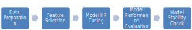
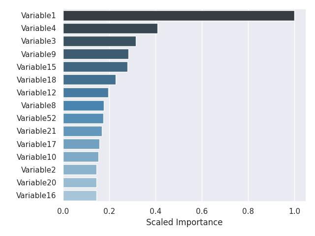
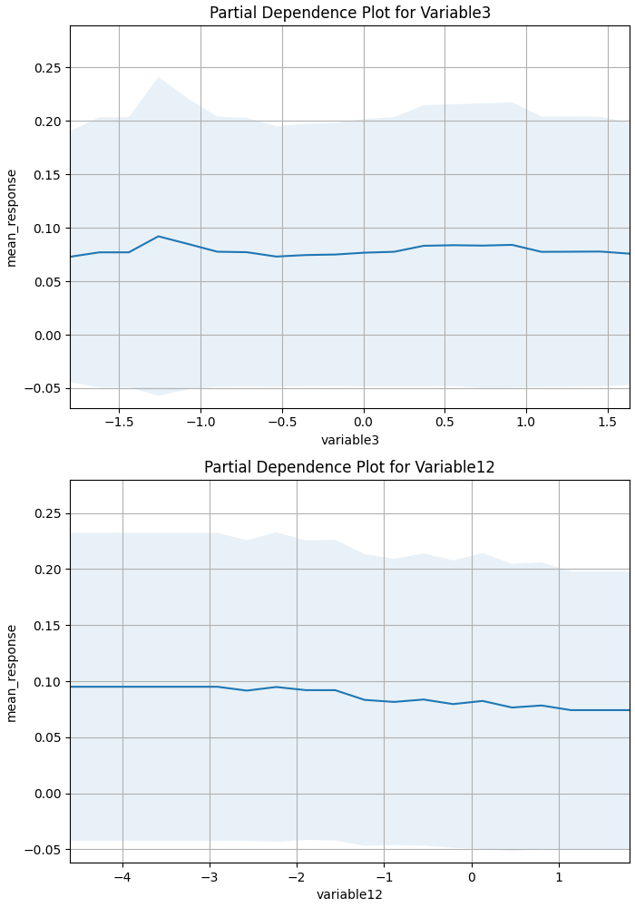
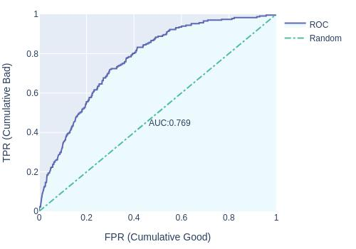
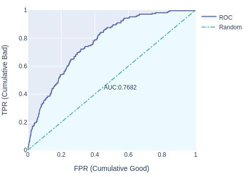
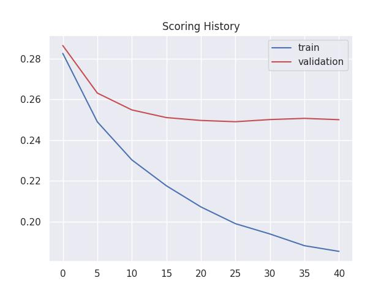

| Dataset | Size | Auto |
|---|---|---|
| Validation | 2500 | 76.81% |
| OOS Test | 2500 | 76.91% |
ABC Bank ltd.
EXECUTIVE SUMMARY
This document covers the model development process for XGBoost_2_AutoML_20210218_195405 model. The model is a classification model that uses XGBoost with input data consisting of 20000 observations and 70 features. The model achieves Auto of 75.84% on validation dataset and 74.98% on Out-of-Sample (OOS) test dataset.
MODEL PERFORMANCE SUMMARY
DATASET
Following dataset were used for model training, tuning and OOS performance estimation:
| Dataset | Size | Features | Purpose |
|---|---|---|---|
| Train | 20000 | 70 | Model training |
| Validation | 2500 | 70 | Hyperparameter tuning |
| OOS Test | 2500 | 70 | OOS performance estimation |
EDA
Following is a summary of input data. Refer Annexure-1 for detailed EDA.
| Dataset | Rows | Columns | Numeric | Category | Time | String |
|---|---|---|---|---|---|---|
| Train | 20000 | 70 | 69 | 1 | 0 | 0 |
| Val | 2500 | 70 | 69 | 1 | 0 | 0 |
| Test | 2500 | 70 | 69 | 1 | 0 | 0s |
Methodology Overview
XGBoost is a machine learning technique for regression and classification problems, which produces a prediction model in the form of an ensemble of weak prediction models, typically decision trees. It builds the model in a stage-wise fashion by optimization of a loss function.
Following is a summary of steps performed to train the model:

Data Preparation
The dataset is randomly split into train, validation and holdout test datasets. Train data is used for model fitting. Validation dataset is used for model tuning i.e. finding the optimal combination of hyperparameters that provide the best fit on a given dataset. Holdout test dataset is used to arrive at an unbiased estimate of OOS performance of the model.
Feature Transformation
Typically all features are converted into numeric features. This is a mandatory transformation for many algorithms such as XGBoost.
Model Tuning
Various models are fitted to the train dataset with multiple combination of hyperparameters (HP). These HP typically control model capacity (large capacity models will provide better fit on train data but may fail to generalize to OOS dataset), model complexity (typically models with larger capacity are also more complex) and model generalization (to prevent overfitting to train data).
Model Performance Evaluation
Performance of trained models is compared on validation dataset using different statistics. Final HP combination and the resultant final model is selected on basis of performance on the validation dataset.
Model Stability
Model stability is checked by detecting drift/shift in features between train, validation and test dataset. This is done by computing Stability Index at model and individual feature level to identify if model is stable or not.
Model Details
Detailed Information regarding model.
Model Hyperparameters
Following is a summary of key model hyperparameters:
| Statistics | Value |
|---|---|
| Col sample rate per tree | 0.8 |
| Histogram type | Auto |
| Max Depth | 15 |
| Min Rows | 100 |
| Min Split Improvement | 0.00001 |
| Ntrees | 40 |
| Sample Rate | 0.8 |
Important Features
Following is a list of important features for the model:

Partial Dependence Plots for Top-2 variables are shown below:

Model Performance
Following are the model performance statistics on validation and OOS test dataset:
Validation dataset

Test dataset

Model Stability
Following are model stability statistics:
Train vs. Validation dataset 
Validation vs. Test dataset 
Model Scoring History
Following is a summary of change in model performance statistics with increase in number of trees.
